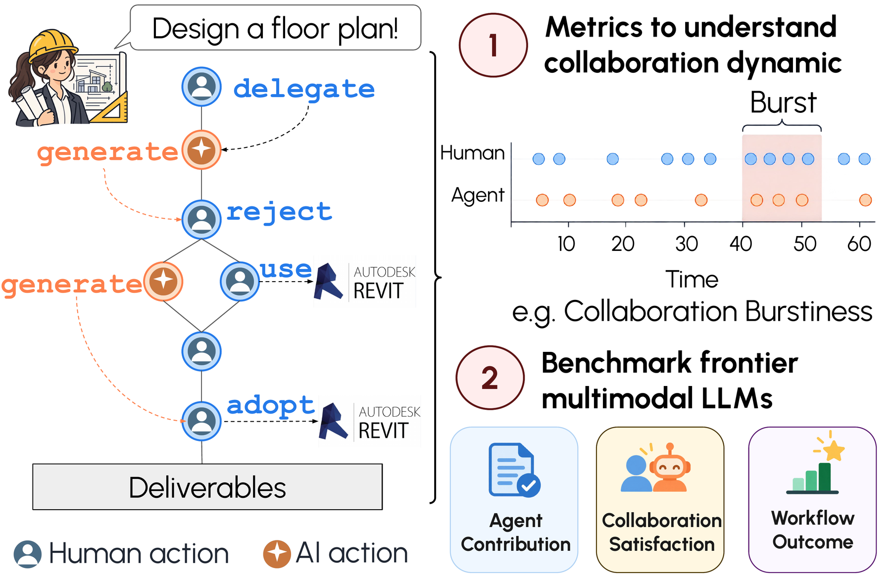
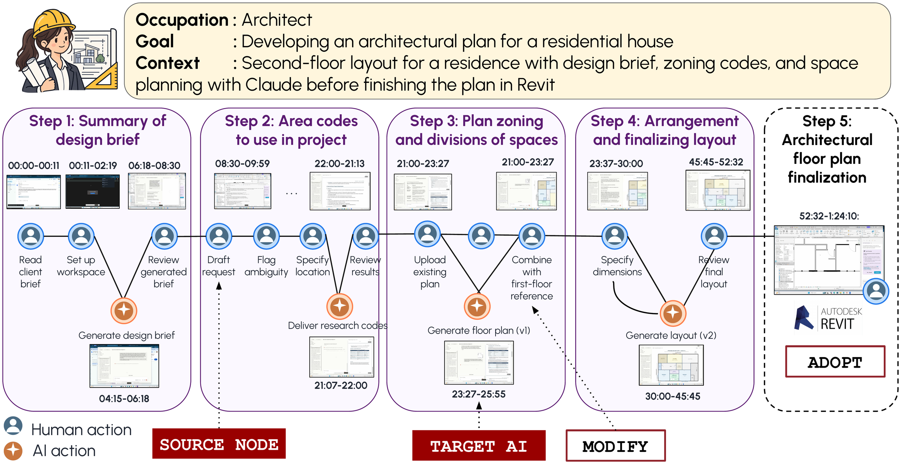
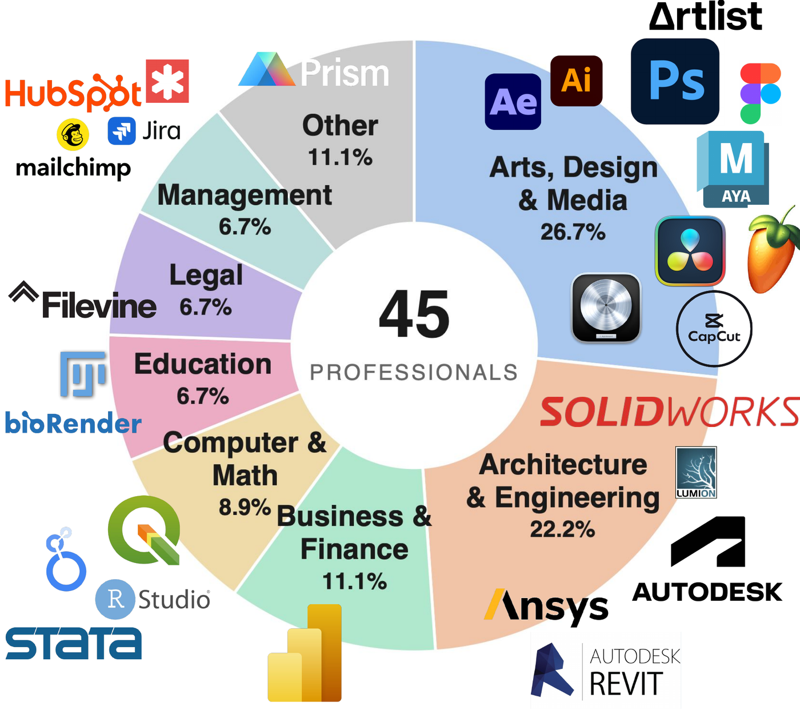
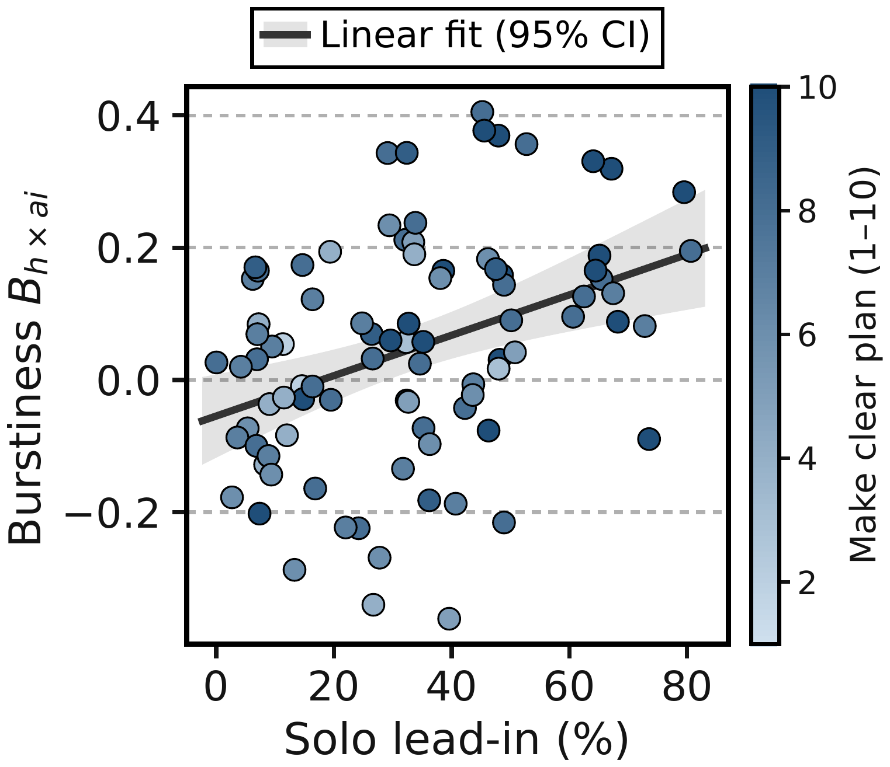
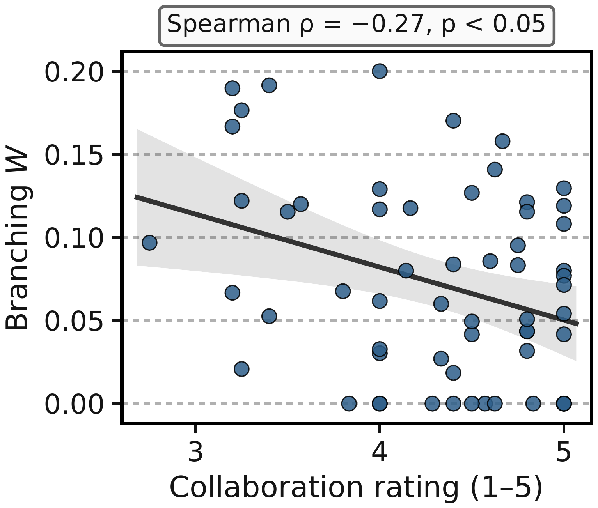
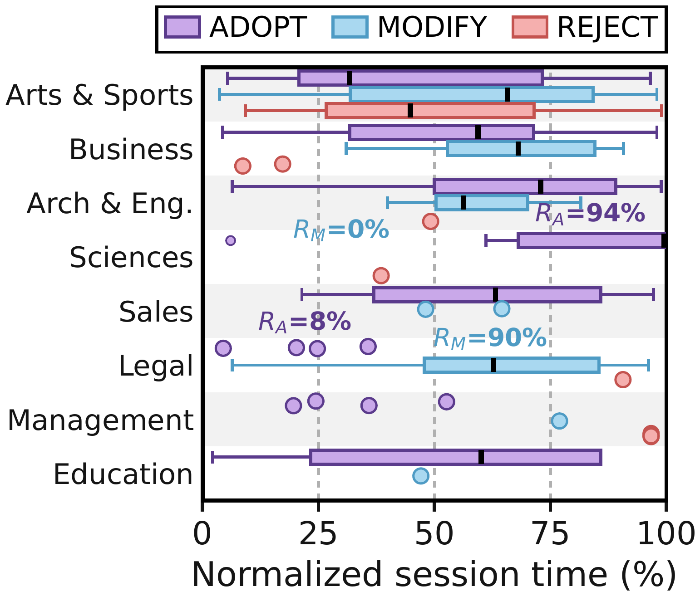
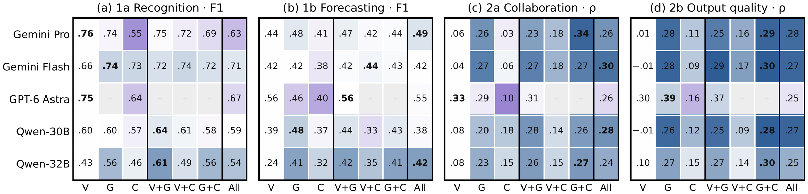
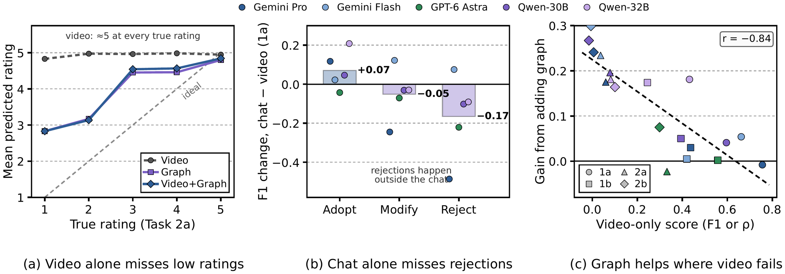
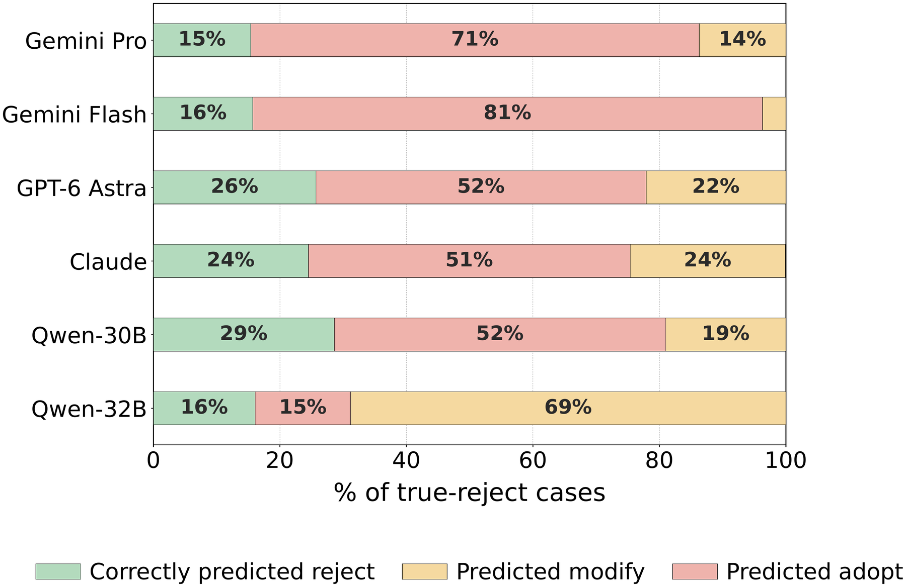
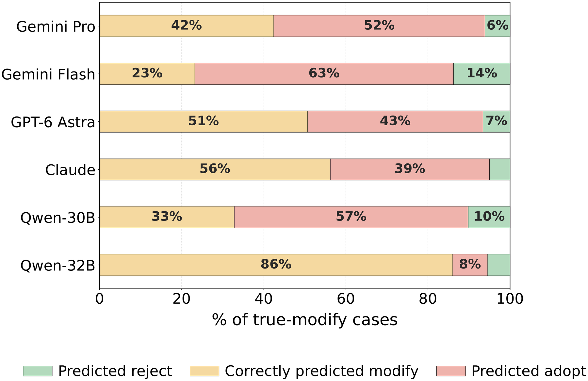

Abstract
When humans collaborate with AI agents on long-horizon tasks, what happens to the agents' contributions? For solving long-horizon tasks, humans place greater importance on ongoing interaction with AI agents (e.g., revising plans) than on an agent's ability to complete the task in a single attempt. However, most agentic benchmarks have focused more on automation. Strong performance on these benchmarks does not mean that an agent can collaborate effectively when deployed in the real world.
Professional workflows offer a useful setting for examining this question, as they often involve interdependent steps. To address this gap, we introduce KOLAB, a new dataset of 100+ hours of screen recordings of 45 professionals from 36 occupations collaborating with AI agents on realistic, long-horizon problems. The dataset also contains collaboration and output quality judgments from the participating experts. We evaluate (1) how well agents collaborate with professionals and (2) whether they can serve as verifiers of human-agent collaboration.
With KOLAB, we find that frontier models, both agentic and non-agentic, tend to overestimate collaboration with experts and struggle to distinguish between high- and low-quality collaboration. As frontier agents cannot yet understand long-horizon collaboration with experts, we position KOLAB as a valuable dataset for systematically studying human-agent collaboration grounded in real professional workflows.

The KOLAB Dataset
Existing datasets of human-agent work are often not public, rely on predefined tasks constructed by researchers, or focus on a single domain such as software development. KOLAB instead captures professionals solving their own real-world problems with an agentic AI (Claude), while using whatever other software and AI tools they normally rely on.
Problem criteria
🌍 Real-world
The problem originates from the professional's actual work, not from an existing workflow dataset.
🎓 Domain-specific
It requires professional knowledge, skills, or judgment. Routine tasks and generic information seeking were excluded.
⏳ Complex & long-horizon
At least one hour of work and at least five interdependent steps, each with multiple computer actions.
📦 Deliverable-oriented
A concrete final deliverable, plus an intermediate output at every step that can be evaluated.
Workflows as graphs
Each workflow is a temporal graph of semantically meaningful human and agent actions and their dependencies. In the example below, an architect works through five steps. A task delegated to the agent in Step 2 yields an output that is later MODIFY-ed in Step 3, and the final plan is ADOPT-ed in Revit, an action that never appears in the chat interface.


What we release
- Screen-recording videos for all sessions
- Workflow documents written by the professionals (goal, context, step names/actions)
- Human–agent chat logs, including agent tool calls
- Optional input and output files of each workflow
- Human ratings of collaboration experience and output quality, with step-level output rubrics written by the professionals
- Workflow graph per session, with step alignment, timestamps, and adoption labels
- Post-session survey responses
Collaboration satisfaction was rated 5 in 55.7% of sessions (4 in 28.9%); output quality was rated 5 in 53.6% (4 in 31.2%).
How Humans Use Agent Outputs
Two human annotators labeled how the human response to each agent output incorporated that output, including actions that happen outside the chat interface:
ADOPT · 62.4%
The output is incorporated as-is, e.g. directly using an agent-generated design.
MODIFY · 27.3%
The output is used after the human revises it.
REJECT · 10.3%
The output is discarded or met with negative sentiment, and the human proceeds differently.
| Response | Source node action | Target AI node action | Current node action | Software |
|---|---|---|---|---|
| ADOPT | Request Afrobeats/techno background music in ElevenLabs | ElevenLabs generates Afrobeats instrumental candidates | Capture the ElevenLabs track and import it into the DaVinci Resolve project | ElevenLabs, DaVinci Resolve |
| MODIFY | Upload the existing shell plan and request a full room layout | Claude delivers a dimensioned floor-plan layout for the lobby/storage circulation | Rebuild walls/partitions in Revit, keeping the liked zoning but fixing lobby/storage circulation | Revit |
| REJECT | Ask Kling AI to generate a Zanzibar schoolyard video clip | Kling AI generates the requested video clip | Judge the clip's audio unusable and abandon it, out of credits to iterate further | Kling AI |
In total, 74 of 90 sessions (82%) have human-curated temporal graphs (avg. 5.6 steps/session, 7.87 nodes/step) and 43 sessions (59.7%) carry adoption labels, yielding 298 labeled instances for benchmarking.
Collaboration Dynamics
We characterize collaboration with three metrics: burstiness B of the human–agent interaction rhythm (Goh & Barabási), workflow topology W (the fraction of branch nodes, i.e. how much the human works concurrently while the agent generates), and AI retention RA, RM (the share of agent outputs adopted or modified).

(a) Collaboration burstiness
(b) Workflow topology
(c) AI retention rateBurstier workflows reflect more planning before interacting with the agent. Burstiness is consistent within individuals across sessions (ρ = 0.67) and rises with solo lead-in, the share of a step completed before the first AI interaction (ρ = 0.37, p < 0.001).
Branching workflows are associated with lower perceived collaboration experience (ρ = −0.27, p < 0.05), suggesting concurrent human and agent activity may introduce coordination costs.
AI retention varies across professional domains. Adoption rates range from 59% in Arts & Sports to 94% in Sciences, while Legal workflows differ markedly, with 8% adoption and 90% modification.
Benchmark: Can MLLMs Understand Human-Agent Collaboration?
| Task | Observed workflow | Response visible? | Prediction |
|---|---|---|---|
| 1a Recognition | source node → human adoption node | ✓ | ADOPT / MODIFY / REJECT |
| 1b Forecasting | source node → target AI node | ✗ | ADOPT / MODIFY / REJECT |
| 2a Collaboration satisfaction | full step | N/A | Rating 1–5 |
| 2b Output quality | full step | N/A | Rating 1–5 |
RQ1 · AI adoption
How well can frontier MLLMs forecast how humans use agent contributions in long-horizon professional workflows?
RQ2 · Human rating
How well can they predict human ratings of collaboration satisfaction and output quality from the observed workflow?
We evaluate Gemini 3.1 Pro, Gemini 3.8 Flash, GPT-6 Astra, Claude Opus 5.5, and two open-weight video MLLMs (Qwen3-VL-30B-A3B and Qwen3-VL-32B), against majority-class and mode-rating baselines. Video is the primary input; we also test all seven combinations of video, workflow graph, and chat log.
Results
RQ1 · Recognizing and forecasting AI adoption
| 1a F1 | 1b Forecasting | 1b per-label F1 | |||||
|---|---|---|---|---|---|---|---|
| Model | F1 | P | R | F1 | Adopt | Modify | Reject |
| Majority-class | 0.249 | 0.199 | 0.333 | 0.249 | 0.747 | 0.000 | 0.000 |
| Gemini 3.1 Pro | 0.756±0.017 | 0.529±0.079 | 0.434±0.020 | 0.437±0.028 | 0.696±0.020 | 0.447±0.003 | 0.168±0.069 |
| Gemini 3.8 Flash | 0.662±0.010 | 0.491±0.031 | 0.418±0.012 | 0.420±0.014 | 0.734±0.008 | 0.317±0.014 | 0.208±0.023 |
| GPT-6 Astra | 0.748 | 0.580±0.027 | 0.558±0.028 | 0.558±0.023 | 0.710±0.026 | 0.577±0.043 | 0.387±0.054 |
| Claude Opus 5.5 | 0.672 | 0.635 | 0.544 | 0.562 | 0.750 | 0.542 | 0.392 |
| Qwen3-VL-30B-A3B | 0.596±0.010 | 0.405±0.014 | 0.412±0.024 | 0.394±0.022 | 0.544±0.029 | 0.359±0.029 | 0.278±0.019 |
| Qwen3-VL-32B | 0.432±0.033 | 0.441±0.042 | 0.382±0.016 | 0.245±0.012 | 0.064±0.033 | 0.447±0.010 | 0.225±0.022 |
Video-only input, mean ± std over 3 runs. Shaded = best excluding Claude (the agent used in data collection, which may be biased toward its own interface).
RQ2 · Predicting collaboration satisfaction and output quality
| 2a Collaboration | 2b Output quality | |||||
|---|---|---|---|---|---|---|
| Model | MAE ↓ | Within-1 ↑ | Spearman ρ ↑ | MAE ↓ | Within-1 ↑ | Spearman ρ ↑ |
| Mode baseline | 0.679 | 0.847 | – | 0.725 | 0.836 | – |
| Gemini 3.1 Pro | 0.697 | 0.843 | 0.060 | 0.767 | 0.821 | 0.006 |
| Gemini 3.8 Flash | 0.798 | 0.816 | 0.037 | 0.817 | 0.808 | −0.006 |
| GPT-6 Astra | 0.960 | 0.836 | 0.332 | 0.938 | 0.779 | 0.299 |
| Qwen3-VL-30B-A3B | 0.912 | 0.808 | 0.079 | 1.239 | 0.656 | −0.015 |
| Qwen3-VL-32B | 1.266 | 0.609 | 0.082 | 1.341 | 0.563 | 0.101 |
Averaged over 3 runs. Because human ratings skew heavily toward 5, the trivial mode baseline beats every MLLM on MAE.
Which modality helps?
No single modality wins everywhere. Video gives the best recognition (Gemini 3.1 Pro, F1 = 0.76) and forecasting (GPT-6 Astra, F1 = 0.56). Chat alone hurts REJECT cases (−0.17 F1 vs. video), likely because rejections happen outside the chat. Human-curated workflow graphs help the non-agentic Qwen models most: for Qwen-32B they lift forecasting F1 from 0.24 to 0.42, and for output quality they raise Gemini Flash and Qwen-30B from ρ ≈ 0 to 0.26–0.30.


Failure Cases
Models favor particular labels. Gemini 3.1 Pro and Flash consistently over-predict ADOPT: with video, Gemini Flash predicts it for 79.2% of examples against a 62.0% ground-truth rate. Qwen3-VL-32B instead predicts MODIFY for 91.5% of cases (28.1% in the ground truth).


Models give near-constant ratings. With video, Gemini 3.1 Pro predicts 4.83 for a true rating of 1 and 4.95 for a true 5 in Task 2a. Adding the graph widens the gap between true ratings of 1 and 5 to 1.96 and 2.49 for Tasks 2a and 2b; GPT-6 and Claude already separate low and high ratings with video (gaps of 0.74–1.23).
Conclusion
KOLAB benchmarks frontier multimodal agentic models on their ability to support human-agent collaboration in long-horizon workflows. Even frontier MLLMs, including GPT-6, struggle to predict and understand human–AI collaboration. In future work, we will explore constructing training datasets and sandbox environments where models can practice collaborating with simulated users before real-world deployment.
BibTeX
@misc{hayati2026kolab,
title = {Kolab: Benchmarking Human-Agent Collaboration in Long-Horizon Workflows},
author = {Hayati, Shirley Anugrah and Setiani, Patricia Anugrah and Wang, Ruizi and Li, Zhouyi and Le, Khanh Chi and Lee, Young-Jun and Kang, Dongyeop},
year = {2026}
}